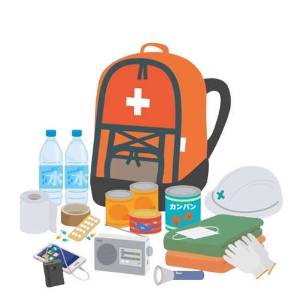
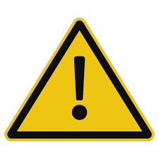

Rainfall data will appear here after you search a city.
Weather forecast
Weather forecast will appear after you search a city.
5-day forecast
What to do before a flood:

Find out if your area is likely to be flooded from trusted sources (e.g PAGASA, LGU).
Learn how your community announces flood warnings, and make sure your family understands it.
Keep informed of daily weather condition.
Designate an evacuation area for the family and livestock.
Assign family members instructions and responsibilities according to an evacuation plan.
Keep a stock of food that requires little cooking and refrigerator; electric power may be interrupted.
Keep a transistorized radio and flashlight with spare batteries, emergency cooking equipment, candies, matches and first aid kit handy in case of emergency.
Store supplies and other household effects above expected flood water level.
Strengthen your house and/or objects that may be damaged or swept away by the flood.
Source: PAGASA Flood Advisory
When warned of flooding
Watch out for rapidly rising flood waters.
Listen to your radio for emergency instructions.
If you find it necessary to evacuate, move to a safe area before access is cut off by flood waters.
Store drinking water in containers, water service may be interrupted.
Move household belongings to upper levels.
Get livestock to higher ground.
Turn off electricity at the main switch in the building before evacuating and also lock your house.
Source: PAGASA Flood Advisory
What to do during a flood:

Avoid areas prone to sudden flooding.
Do not attempt to cross rivers, flowing streams, or floods in general where water is above the knee.
Beware of water-covered roads and bridges.
Stay indoors as much as possible to avoid danger from rain, wind or floodwaters.
Do not go swimming or boating in flooded rivers.
Drink clean or preferably boiled water only.
Eat only well-cooked food. Protect your food against contamination.
Source: PAGASA Flood Advisory
What to do after a flood:
Re-enter areas with caution using flashlights, not lanterns or torchers. Flammables may be inside.
Be alert for fire hazards like broken wires.
Do not eat food and drink water until they have been checked for flood water contamination.
Report broken utility lines (electricity, water, gas and telephone) to appropriate agencies authorities.
Do not turn on the main switch or use appliances and other equipment until they have been checked by a licensed electrician.
Consult health authorities for immunization requirements.
Do not go in areas with disasters. Your presence might delay rescue and other emergency operations.